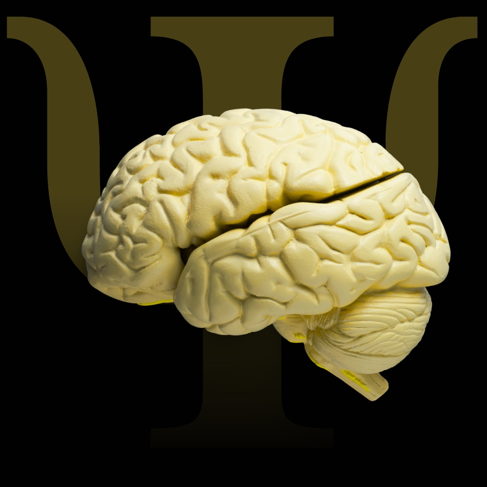

A História — Onde Tudo Começou
Sou Renata Miranda, Psicóloga, Mentora de Mulheres e Escritora, também formada em Direito e fundadora do Instituto Plenamente+. Antes de ensinar Psicanálise, mergulhei profundamente na minha própria mente em busca de respostas para a minha história. Foi nesse caminho de autoconhecimento que compreendi que o verdadeiro saber não está apenas na teoria, mas na coragem de olhar para dentro.
Essa jornada me transformou e me fez entender que a maior realização é transformar o que te curou em uma missão que ajuda a curar outras pessoas. Assim nasceu o Instituto Plenamente+, fruto de um propósito:
Formar pessoas que se conhecem para transformar, unindo a profundidade da Psicanálise à sensibilidade humana e ao propósito de vida. Hoje, centenas de alunos já passaram por essa formação e descobriram não apenas uma nova visão de si mesmos, mas também uma nova identidade profissional. Porque antes de transformar vidas, é preciso transformar a sua. E esse é o início de toda jornada rumo à plenitude.
As Dores Que Te Trouxeram Até Aqui
A Psicanálise é o caminho entre o que você vive hoje e o que você pode se tornar um processo que começa dentro, mas te prepara para atuar no mundo.
- Já pensou ou já ajuda outras pessoas e quer usar a Psicanálise para isso?
- Você sente que tem algo dentro de você que precisa compreender melhor.
- Sente que nasceu para algo maior, mas não encontra um caminho que una propósito e profissão?
A Formação em — Psicanálise Plenamente
A formação do Instituto Plenamente foi criada para quem deseja unir autoconhecimento, propósito e profissão.
Aqui, você vai aprender:-
Os fundamentos teóricos e práticos da Psicanálise.
-
Como compreender e conduzir processos terapêuticos com ética e segurança.
-
Como desenvolver o olhar analítico e a escuta terapêutica.
-
E principalmente: como se tornar um(a) profissional confiante, empático(a) e realizado(a).
O Método Plenamente — O Que Nos Torna Únicos
A metodologia Plenamente é o equilíbrio entre teoria, prática e transformação pessoal.
-
Teoria que faz sentido: conteúdo estruturado e acessível, sem perder a profundidade da Psicanálise clássica.
-
Vivência e escuta: cada etapa traz reflexões, práticas e supervisões que fazem você viver o que estuda.
-
Acompanhamento próximo: você não caminha sozinha: professores e mentores te acompanham em todo o processo.
-
Comunidade ativa: trocas, encontros e suporte contínuo, mesmo após a formação.
A Pré Matricula para as próximas turmas já estão abertas.
Escolha o formato que mais combina com seu momento e inicie sua jornada de transformação pessoal e profissional.
Você recebe:- Acesso completo às aulas teóricas e práticas;
- Supervisão e acompanhamento direto com a equipe Plenamente;
- Certificação reconhecida;
- Comunidade exclusiva e encontros ao vivo;
- Bônus e materiais complementares;
- Parcelamento facilitado;
- Certificação ao concluir;
- Aulas ao vivo